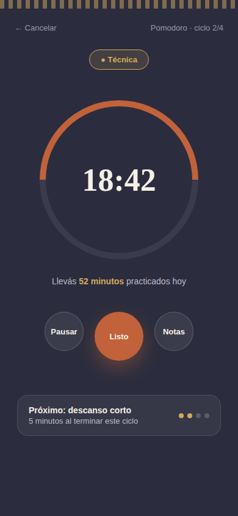

→ Dirección actual
Dashboard — 2026
Bento grid + liquid glass + gradiente con grano. Tendencias 2026 con identidad terracota/dorado.

Sesión
Temporizador + Pomodoro
Pantalla de práctica activa con anillo de progreso y ciclos de Pomodoro.

Variante
Dashboard — Cálido
Punto medio: calidez y lenguaje cercano, paleta única terracota/dorado sin mezcla.

Referencia
Dashboard — Sobria
Primera versión. Más académica, greca marcada, serif clásico.